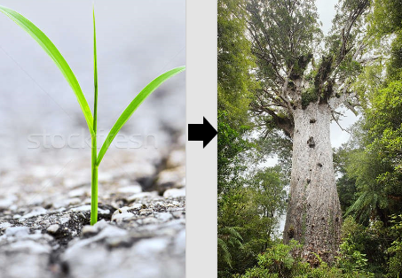
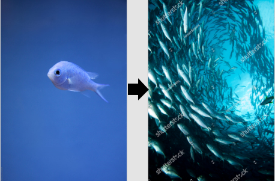

Ideation and brainstorming
We decided to start ideating around a platform described on the problempage. Our focus has been on making the platform simple to navigate and enjoyable to use. The enjoyment becomes implemented via two factors. [1]The ones allready invested in working towards a better, more sustainable future will have a platform for locating and creating events that supports their cause. We hope that such an app would make it easier for people to come together and make these changes more easily. [2]We also decided that some form of gamification would create incentives for people to stay active on our platform.
Our solution
Our solution for said problem is to make a website/app based platform. This platform uses GPS data to track nearby Events other people have created and will track self made events as well. There will be options to categorise events based on location or field of impact. This way you can choose to go to climate events that directly affects the things you care about the most. Another function we plan to implement is a map/region function that lets you see events close to you or to your selected region.
You can try the app prototype here
Explaining the gamification aspect
Adrian came up with the idea of maybe having a dynamic background that evolved based on event participation. This seemed like a great idea so Martin started sketching some evolutions. The users of our platform will be able to decide between three background presets. One for aquatic life, one for life on land and one for floral life. When the user has chosen a preset, they will have this as their background on the app. It starts small. In the aquatic version you see a lonely fish swimming around. In the life on land version, you might see a random animal by itself. And In the floral one you might see a treeseed barely sprouting.
As you progress and participate in events, so does your theme. The fish will start to get accompanied by other species and the screen will become more alive. The lonely animal will get friends as well, and soon the screen will flourish with a diversity of life. The seed starts to grow, to branch out. And before you know it, a lush forest stand before you.
This will work as an incentive to participate in events near you. And the feedback, besides for doing something good for the environment of course, will be shown as a visual change in your app. You help the world, and at the same time grow your own little ecosystem.
Example of evolution of forest theme
Example of evolution of ocean theme
Example of evolution of animal theme

How does the solution connect to the problem?
Via the 17 goals set by the UN:
Makes it possible to share information about climate change/control and the effect certain things has on it. As well as providing education/training on actions one could take to battle climate change.
Helps engage the population in participating in local environmental events. People get more aware. In return communities and cities will hopefully take more steps to ensure a more sustainable community model.
An app/Website of this type will hopefully make more people take action and give them awareness of where and when to take said action. Our idea could spread the word of environmental issues and make more people involved.
People could organise and join already planned events to fight for life below water. Some event examples: Fishing limits in the Oslofjord to ensure sustainable growth of the aquatic species. Making sure the reefs are taken care of and not destroyed, which In return would boost the quality of aquatic life.
People could organise and join already planned events to fight for life on land. Ex: Preservation of bees. Stopping rainforest harvesting, Protest the big oil companies invading to destroy natural resources for oil.
Encourage teamwork and a sense of community/belonging by getting together and working for a common cause for the greater good.